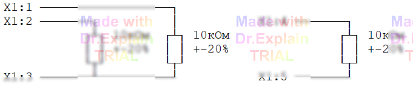

3.1 Контроль омических сопротивлений (команда КС)
На рисунке показан пример подключения резисторов к входам АСК:

Команда КС применяется для проверки сопротивления навесных
резисторов, подключённых к входам АСК. В одном вызове задаётся:
• требуемый номинал и допуск;
• список точек (контактов) для каждого проверяемого резистора.
Пример
100 КС R=10кОм±20% *X1:3,X1:1,X1:2 *X1:4,X1:5*То же с сокращённой записью точек:
100 КС R=10кОм±20% *X1:3,X1:1-2 *X1:4-5*-
Первой в каждом фрагменте списка указывается «общая» точка
(контакт
X1:3либоX1:4). - Фрагменты отделяются символом «
*». -
Если проверяемые резисторы имеют разные номиналы, для каждого
номинала формируется отдельная команда
КС.